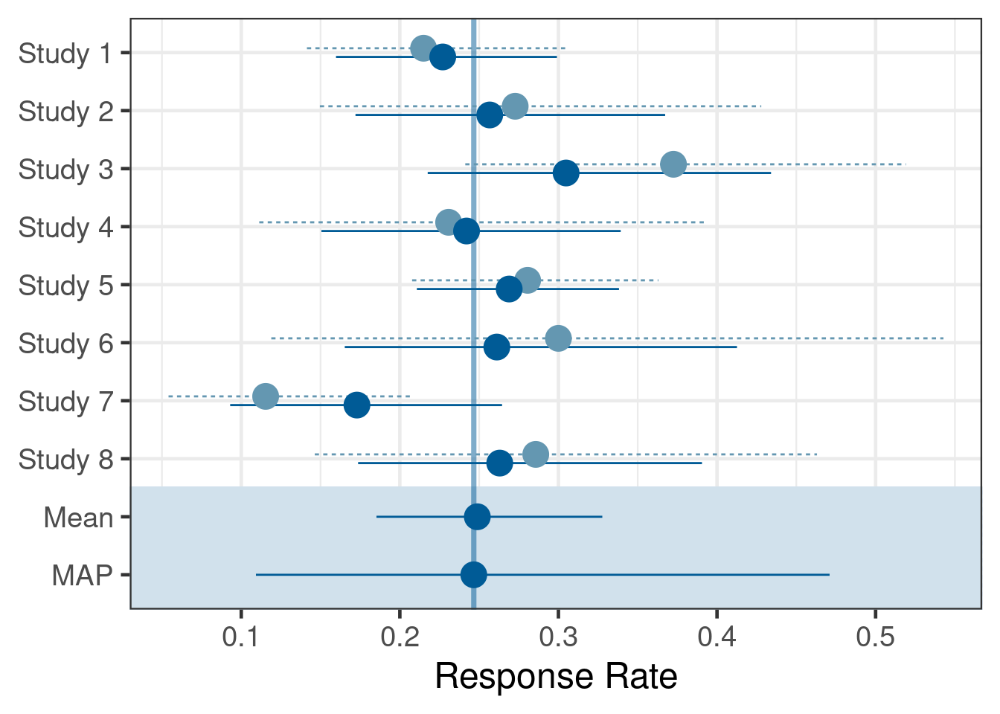
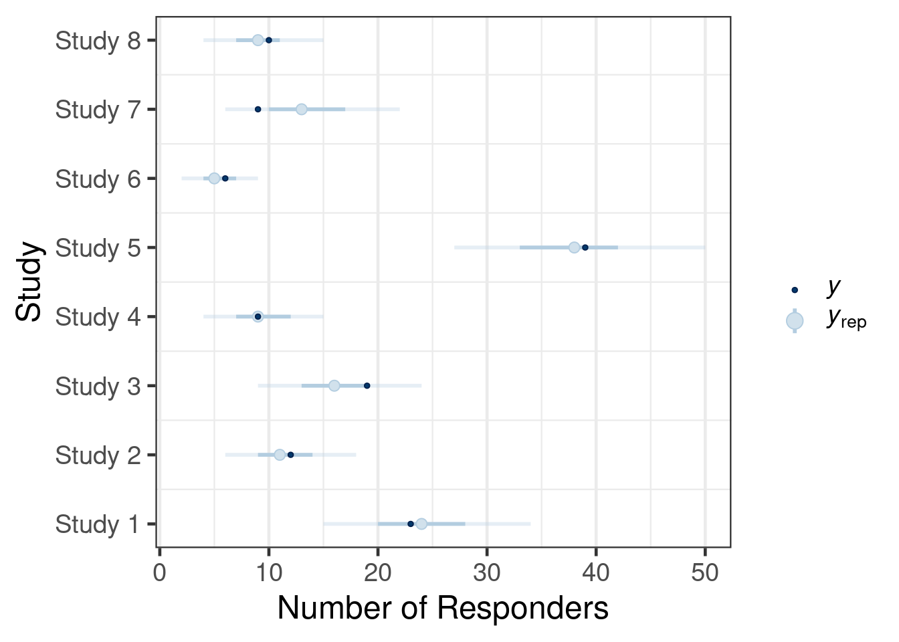
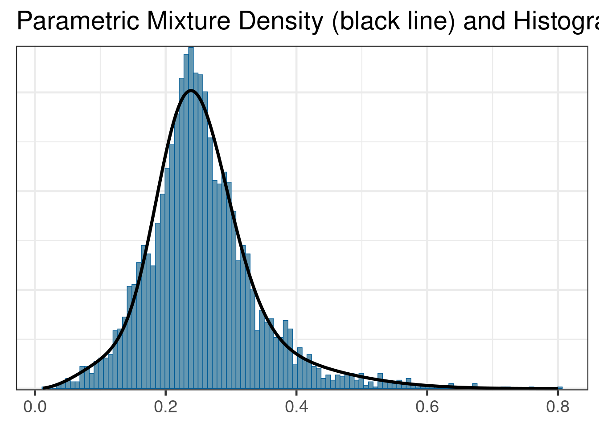
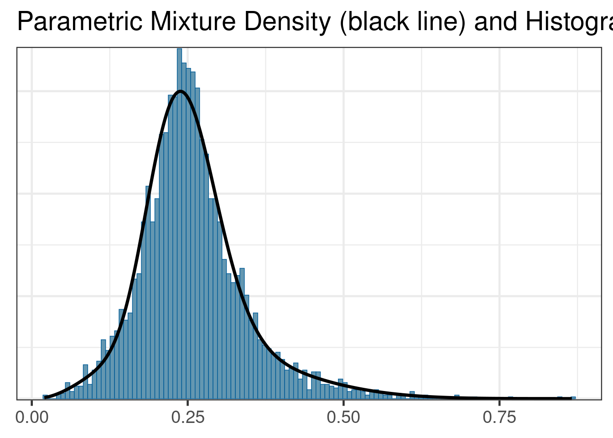
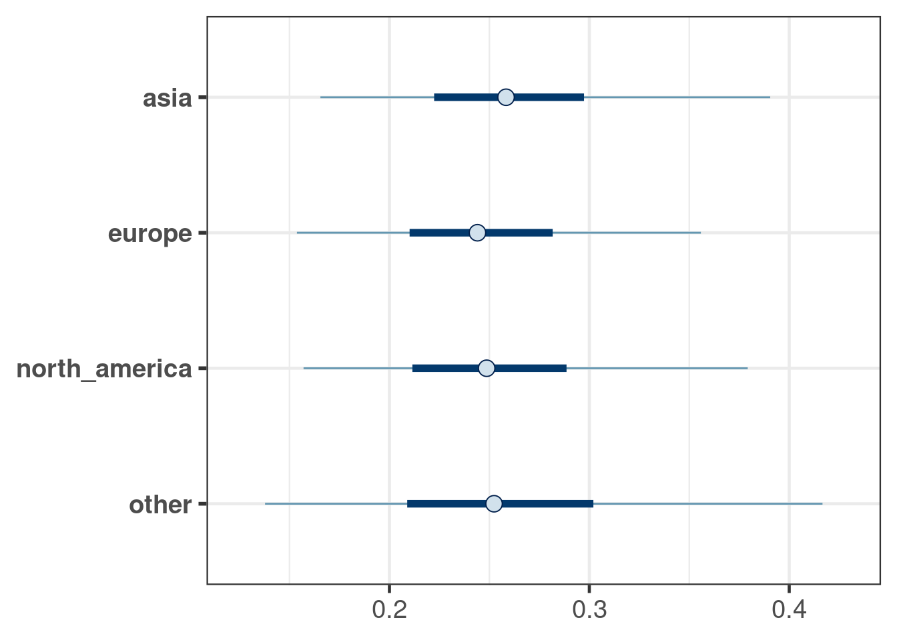

library(ggplot2)
library(dplyr)
library(knitr)
library(brms)
library(posterior)
library(bayesplot)
library(RBesT)
library(here)
# instruct brms to use cmdstanr as backend and cache all Stan binaries
options(brms.backend="cmdstanr", cmdstanr_write_stan_file_dir=here("_brms-cache"))
# create cache directory if not yet available
dir.create(here("_brms-cache"), FALSE)
set.seed(593467)4 Use of historical control data
Here we will demonstrate the use of historical control data as an example for a meta-analytic predictive (MAP) prior approach based on random-effects meta-analyses. The intention of using a MAP prior is to reduce the sample size in a control group of a new trial while maintaining power to detect a treatment effect. This is achieved by synthesizing available information on a control treatment, which is then used in the form of an informative prior for the analysis in the new trial.
This case study demonstrates
- setting up a random effect meta-analysis with up to two levels
- setting up model priors
- how to use the model outputs from
brmsas input to the R packageRBesT, which allows to further evaluate MAP priors for a trial design.
To run the R code of this section please ensure to load these libraries and options first:
4.1 Background
Given the relevance of the use of historical control data problem for drug development, a full R package RBesT (R Bayesian evidence synthesis tools) is available on CRAN. Here we will re-implement the example of the vignette of RBesT for the binary case and will illustrate how brms can be used in a more complex setting as a case study. In particular, we are going to assume as a complication that the historical trial data has been collected in specific regions of the world and how this can be used to borrow strength between regions. As a simplifying assumption it is assumed that trials are nested within regions thereby implying that trials are conducting exclusively in specific regions.
For details on the RBesT R package, please refer to
- Weber et al. (2021) doi:10.18637/jss.v100.i19 for details on applying the
RBesTpackage, and - Neuenschwander et al. (2010) doi:10.1177/1740774509356002 and
- Schmidli et al. (2014) doi:10.1111/biom.12242 for details on the MAP methodology.
4.2 Data
A Phase II study is planned to evaluate the efficacy of a test treatment in a randomized comparison with placebo in the disease ankylosing spondilityis. At the design stage of the trial control group data were available from a total of eight historical studies.
This data-set is part of the RBesT package as the AS data-set and here we add as additional column a randomly assigned region variable:
library(RBesT)
AS_region <- bind_cols(AS, region=sample(c("asia", "europe", "north_america"), 8, TRUE))
kable(AS_region)| study | n | r | region |
|---|---|---|---|
| Study 1 | 107 | 23 | asia |
| Study 2 | 44 | 12 | europe |
| Study 3 | 51 | 19 | north_america |
| Study 4 | 39 | 9 | europe |
| Study 5 | 139 | 39 | north_america |
| Study 6 | 20 | 6 | asia |
| Study 7 | 78 | 9 | europe |
| Study 8 | 35 | 10 | asia |
The total number of 513 patients in the 8 trials is quite substantial.
4.3 Model description
The RBesT package implements the MAP approach following a standard generalized linear modeling framework for a random-effects meta-analysis:
\(Y\) is the (control) group summary data for \(H\) historical trials
\(Y_{h}|\theta_{h} \sim f(\theta_{h})\)
\(g(\theta_{h}) = \beta + \eta_h\)
\(\eta_h|\tau \sim \mbox{Normal}(0, \tau^2)\)
\(f\) likelihood: Binomial, Normal (known \(\sigma\)) or Poisson
\(g\) link function for each likelihood \(f\): \(\mbox{logit}\), identity or \(\log\)
\(\beta\) population mean with prior \(\mbox{Normal}(m_{\beta}, s_{\beta}^2)\)
\(\tau\) between-trial heterogeneity with prior \(P_\tau\)
The priors used for this data-set will be:
- \(\beta \sim \mbox{Normal}(0, 2^2)\)
- \(\tau \sim \mbox{Normal}^+(0, 1)\)
We will first run the analysis with the RBesT command gMAP. As a next step we will convert the analysis to use brms for the inference. Finally, we will add an additional random effect for the region \(j\) and treat the random effect for the studies to be nested within the region. As the more general model requires two levels of random effects, it is outside the possible models of RBesT. Such a more general region specific model can be useful in various situations whenever we wish to borrow strength across regions. Denoting with \(j\) specific regions, the more general model is then:
\(Y_{h,j}|\theta_{h,j} \sim f(\theta_{h,j})\)
\(g(\theta_{h,j}) = \beta + \eta_h + \nu_j\)
\(\eta_h|\tau \sim \mbox{Normal}(0, \tau^2)\)
\(\nu_j|\omega \sim \mbox{Normal}(0, \omega^2)\)
In our case study we make a simplifying assumption that any trial \(h\) is run entirely within a given region \(j\). Therefore we have a nested structure (trials within regions) such that no correlation is modeled between region and trial. This would be different if some trials were run across different regions and trial results would be reported by region.
4.4 Implementation
With the gMAP command in RBesT we can obtain MCMC samples from posterior for the first model as follows:
set.seed(34767)
map_mc_rbest <- gMAP(cbind(r, n-r) ~ 1 | study,
family=binomial,
data=AS_region,
tau.dist="HalfNormal", tau.prior=1,
beta.prior=cbind(0,2))
map_mc_rbestGeneralized Meta Analytic Predictive Prior Analysis
Call: gMAP(formula = cbind(r, n - r) ~ 1 | study, family = binomial,
data = AS_region, tau.dist = "HalfNormal", tau.prior = 1,
beta.prior = cbind(0, 2))
Exchangeability tau strata: 1
Prediction tau stratum : 1
Maximal Rhat : 1
Between-trial heterogeneity of tau prediction stratum
mean sd 2.5% 50% 97.5%
0.3730 0.2040 0.0441 0.3490 0.8450
MAP Prior MCMC sample
mean sd 2.5% 50% 97.5%
0.2560 0.0863 0.1090 0.2470 0.4710 Using brms we now specify the MAP model step by step. Binomial data is specified slightly different in brms. We first define the model:
model <- bf(r | trials(n) ~ 1 + (1 | study), family=binomial)The left hand side of the formula, r | trials(n) ~ ..., denotes with r the data being modeled - the number of responders - and adds with a bar | additional information on the response, which are the number of overall trials, needed to interpret the binomial likelihood.
With the model (and data) being defined, we are left to specify the model priors. With the help of the call
get_prior(model, AS_region) prior class coef group resp dpar nlpar lb ub
student_t(3, 0, 2.5) Intercept
student_t(3, 0, 2.5) sd 0
student_t(3, 0, 2.5) sd study 0
student_t(3, 0, 2.5) sd Intercept study 0
source
default
default
(vectorized)
(vectorized)we can ask brms as to what model parameters it has detected for which priors should be specified. In this example, we need to define the population mean intercept (\(\beta\)) and the between-study heterogeneity parameter (\(\tau\)):
model_prior <- prior(normal(0, 2), class=Intercept) +
prior(normal(0, 1), class=sd, coef=Intercept, group=study)Now we are ready to run the model in brms (we are setting refresh=1000 to suppress most progress output):
map_mc_brms <- brm(model, AS_region, prior=model_prior,
seed=4767, refresh=1000)make[2]: warning: jobserver unavailable: using -j1. Add '+' to parent make rule.Start samplingRunning MCMC with 4 sequential chains...
Chain 1 Iteration: 1 / 2000 [ 0%] (Warmup)
Chain 1 Iteration: 1000 / 2000 [ 50%] (Warmup)
Chain 1 Iteration: 1001 / 2000 [ 50%] (Sampling)
Chain 1 Iteration: 2000 / 2000 [100%] (Sampling)
Chain 1 finished in 0.2 seconds.
Chain 2 Iteration: 1 / 2000 [ 0%] (Warmup)
Chain 2 Iteration: 1000 / 2000 [ 50%] (Warmup)
Chain 2 Iteration: 1001 / 2000 [ 50%] (Sampling)
Chain 2 Iteration: 2000 / 2000 [100%] (Sampling)
Chain 2 finished in 0.2 seconds.
Chain 3 Iteration: 1 / 2000 [ 0%] (Warmup)
Chain 3 Iteration: 1000 / 2000 [ 50%] (Warmup)
Chain 3 Iteration: 1001 / 2000 [ 50%] (Sampling)
Chain 3 Iteration: 2000 / 2000 [100%] (Sampling)
Chain 3 finished in 0.2 seconds.
Chain 4 Iteration: 1 / 2000 [ 0%] (Warmup)
Chain 4 Iteration: 1000 / 2000 [ 50%] (Warmup)
Chain 4 Iteration: 1001 / 2000 [ 50%] (Sampling)
Chain 4 Iteration: 2000 / 2000 [100%] (Sampling)
Chain 4 finished in 0.2 seconds.
All 4 chains finished successfully.
Mean chain execution time: 0.2 seconds.
Total execution time: 1.2 seconds.The model is compiled and then run. Occasionally one observes a warning on divergent transitions after warmup reported like:
## Warning: There were 1 divergent transitions after warmup.
This is caused in this case by the choice of very conservative priors, which lead to a difficult to sample posterior. As a quick fix we may reduce the aggressiveness of the sampler and increase the sampler parameter on the target acceptance probability adapt_delta from it’s default value \(0.8\) to a value closer to the maximum possible value of \(1.0\). For most analyses with weak priors using a value of \(0.95\) can be used as a starting value. This is at the cost of some sampling speed as the sampler will take smaller steps, but the choice of a higher than default acceptance probability results in more robust inference and avoids in many instances the warning about divergences. For a more comprehensive overview on possible warnings, their meanings and how to address these, please refer to the online help of the Stan project on possible Stan stampler warnings and messages.
In order to also avoid having to compile the Stan code for the model once more, we use the update functionality of brms:
map_mc_brms_2 <- update(map_mc_brms, control=list(adapt_delta=0.95),
# the two options below only silence Stan sampling output
refresh=0, silent=0)Start samplingRunning MCMC with 4 sequential chains...
Chain 1 finished in 0.3 seconds.
Chain 2 finished in 0.2 seconds.
Chain 3 finished in 0.2 seconds.
Chain 4 finished in 0.3 seconds.
All 4 chains finished successfully.
Mean chain execution time: 0.2 seconds.
Total execution time: 1.2 seconds.map_mc_brms_2 Family: binomial
Links: mu = logit
Formula: r | trials(n) ~ 1 + (1 | study)
Data: AS_region (Number of observations: 8)
Draws: 4 chains, each with iter = 2000; warmup = 1000; thin = 1;
total post-warmup draws = 4000
Multilevel Hyperparameters:
~study (Number of levels: 8)
Estimate Est.Error l-95% CI u-95% CI Rhat Bulk_ESS Tail_ESS
sd(Intercept) 0.38 0.21 0.05 0.88 1.00 1086 1053
Regression Coefficients:
Estimate Est.Error l-95% CI u-95% CI Rhat Bulk_ESS Tail_ESS
Intercept -1.10 0.19 -1.49 -0.74 1.00 1517 1680
Draws were sampled using sample(hmc). For each parameter, Bulk_ESS
and Tail_ESS are effective sample size measures, and Rhat is the potential
scale reduction factor on split chains (at convergence, Rhat = 1).We can see that the estimate of the between-study heterogeneity \(\tau\) is very similar between RBesT and brms. However, the MAP prior is not apparent from the output of brms directly (as it’s not designed with this specific application in mind).
To obtain the MAP prior from brms, we have to predict the response rate of a new study. To do so, a new data set with the same columns as the modeling data sets needs to be created.
AS_region_new <- data.frame(study="new_study_asia", r=0, n=6, region="asia")
post_map_mc_brms <- posterior_linpred(map_mc_brms_2,
newdata=AS_region_new,
# apply inverse link function
transform=TRUE,
# allows new studies
allow_new_levels = TRUE,
# and samples these according to the model
sample_new_levels = "gaussian"
)
# Let's have a look at what we got:
str(post_map_mc_brms) num [1:4000, 1] 0.233 0.219 0.181 0.252 0.2 ...Model outputs are returned in the standard format of a matrix which contains the model simulations. While the rows label the draws, the columns go along with the rows of the input data set. As in this case we have as input data set a 1-row data frame AS_region_new corresponding to predictions for a (single) new study, the output is a 1 column matrix with 4000 rows, since 4000 draws in total were obtained from the sampler run with 4 chains and 1000 draws per chain from the sampling phase.
Note the following important arguments used to obtain the posterior:
transform=TRUEapplies automatically the inverse link function such that we get response rates rather than logit values.allow_new_levels=TRUEis needed to instructbrmsthat new levels of the fitted random effects are admissible in the data. In this case we sample a new study random effect level.sample_new_levels="gaussian"ensures that the new random effect is sampled according to normal distributions as specified with the model. The default option"uncertainty"samples for each draw from the fitted random effect levels one realization, which is essentially bootstrapping random effects on the level of posterior draws. The option"old_levels"samples a random effect level and substitutes all draws for the new level corresponding to bootstrapping the existing levels. While this avoids normality assumptions, it can only work well in situations with many levels of the random effect. The option"gaussian"is for most models the preferred choice and for more details, please refer to thebrmshelp page onprepare_predictions.
A convenient way to get a summary of the samples is to use the summarize_draws function from the posterior package (used as a helper package in brms already):
summarize_draws(post_map_mc_brms)# A tibble: 1 × 10
variable mean median sd mad q5 q95 rhat ess_bulk ess_tail
<chr> <dbl> <dbl> <dbl> <dbl> <dbl> <dbl> <dbl> <dbl> <dbl>
1 ...1 0.259 0.250 0.0860 0.0672 0.135 0.414 1.000 2466. 2855.These estimates are now very similar to the results reported from RBesT reported above (up to sampling error).
Expanding the model to include region would only be possible in RBesT via the use of an additional fixed effect. However, this would essentially refit the model for each region separately and hence limit the amount of information we can borrow among regions. With brms it is straightforward to specify the nested random effects structure described in the Model Details Section. Following the same steps as before, setting up the brms model may look like:
region_model <- bf(r | trials(n) ~ 1 + (1 | region/study), family=binomial)
get_prior(region_model, AS_region) prior class coef group resp dpar nlpar lb ub
student_t(3, 0, 2.5) Intercept
student_t(3, 0, 2.5) sd 0
student_t(3, 0, 2.5) sd region 0
student_t(3, 0, 2.5) sd Intercept region 0
student_t(3, 0, 2.5) sd region:study 0
student_t(3, 0, 2.5) sd Intercept region:study 0
source
default
default
(vectorized)
(vectorized)
(vectorized)
(vectorized)region_model_prior <- prior(normal(0, 2), class=Intercept) +
prior(normal(0, 0.5), class=sd, coef=Intercept, group=region) +
prior(normal(0, 0.25), class=sd, coef=Intercept, group=region:study)
region_map_mc_brms <- brm(region_model, AS_region, prior=region_model_prior, seed=4767,
control=list(adapt_delta=0.99),
refresh=0, silent=0)make[2]: warning: jobserver unavailable: using -j1. Add '+' to parent make rule.Start samplingRunning MCMC with 4 sequential chains...
Chain 1 finished in 0.6 seconds.
Chain 2 finished in 0.6 seconds.Chain 3 Informational Message: The current Metropolis proposal is about to be rejected because of the following issue:Chain 3 Exception: binomial_logit_lpmf: Probability parameter[1] is -inf, but must be finite! (in '/tmp/Rtmp5Ah5rS/model-25e053924072.stan', line 53, column 4 to column 50)Chain 3 If this warning occurs sporadically, such as for highly constrained variable types like covariance matrices, then the sampler is fine,Chain 3 but if this warning occurs often then your model may be either severely ill-conditioned or misspecified.Chain 3 Chain 3 finished in 0.8 seconds.
Chain 4 finished in 0.7 seconds.
All 4 chains finished successfully.
Mean chain execution time: 0.7 seconds.
Total execution time: 3.3 seconds.post_region_map_mc_brms <- posterior_linpred(region_map_mc_brms,
newdata=AS_region_new,
transform=TRUE,
allow_new_levels = TRUE,
sample_new_levels = "gaussian"
)
# Let's have a look at what we got:
summarize_draws(post_region_map_mc_brms)# A tibble: 1 × 10
variable mean median sd mad q5 q95 rhat ess_bulk ess_tail
<chr> <dbl> <dbl> <dbl> <dbl> <dbl> <dbl> <dbl> <dbl> <dbl>
1 ...1 0.250 0.246 0.0587 0.0490 0.165 0.356 1.00 4336. 3960.The key difference to the previous model is the nested random effect specification term (1 | region/study) of the model formula. This syntax denotes a random intercept term for region and study in a way which assumes a nested data structure in that a given study is only run in a single region.
4.5 Results
Once the MAP prior is obtained in MCMC form a model check of is recommended. In RBesT a forest plot augmented with model shrinkage estimates is suggested for this purpose:
plot(map_mc_rbest)$forest_model
The dashed lines show the 95% confidence intervals of each study estimate on it’s own while the solid line shows the respective shrinkage estimate of the MAP model. This plot is useful to assess the plausibility of the results and may unveil possible issues with the model specification. In brms model diagnostic functions are directly available and essentially expose the functionality found in the bayesplot R package. A suitable bayesplot plot in this situation could be an intervals plot as:
pp_check(map_mc_brms_2, type="intervals") +
scale_x_continuous("Study", breaks=1:nrow(AS_region), labels=AS_region$study) +
ylab("Number of Responders") +
coord_flip() +
theme(legend.position="right",
# suppress vertical grid lines for better readability of intervals
panel.grid.major.y = element_blank())Using all posterior draws for ppc type 'intervals' by default.
The call of the pp_check function is forwarded to the respective ppc_* functions for posterior predictive checks from bayesplot (depending on the type argument). The plots are designed to compare the posterior predictive distribution to the observed data rather than comparing mean estimates to one another. Thus, the outcome of each trial in the original data set is sampled according to the fitted model and the resulting predictive distribution of the outcome (number of responders) is compared to the observed outcome. The intervals predictive probability check summarises the predictive distributions using a light color for an outer credible interval range and a darker line for an inner credible interval. The outer defaults to a 90% credible interval (prob_outer argument) while the inner uses a 50% credible interval (prob argument). The light dot in the middle is the median of the predictive distribution and the dark dot is the outcome \(y\). As we can observe, the outcomes \(y\) of the trials all are contained within outer credible intervals of the predictive distributions for the simulated replicate data \(y_{rep}\). However, one may critizise that also the 50% credible intervals contain all but two trials (study 3, study 7). Hence, the calibration of the model with the data is possibly not ideal given that every other trial outcome should be outside (or inside) of the 50% predictive interval. Comparing with a binomial distribution one can find that such an outcome can occur in 14% of the cases and does not represent an extreme finding such that we can conclude that the model is consistent with the data.
Once the model has been checked for plausibility, we can proceed and derive the main target of the MAP analysis, which is the MAP prior in parametric form. RBesT provides a fitting procedure, based in the EM algorithm, for approximating the MCMC output of the MAP prior in parametric form using mixture distributions. In the case of a binomial response Beta mixtures are being estimated:
map_rbest <- automixfit(map_mc_rbest)And a comparison of the fitted density vs the histogram of the MCMC sample is available as:
plot(map_rbest)$mix
The automixfit function above recognizes that the map_mc_rbest object is a gMAP analysis object and automatically calls the correct Beta EM mixture algorithm for proportions. When working with brms we also do obtain the MAP prior in MCMC form on the response scale, but we need to provide automixfit additional information on the provided MCMC sample like this:
map_brms <- automixfit(post_map_mc_brms[,1], type="beta")At this stage we can work with map_brms_2 just like we would when using RBesT directly such that the graphical diagnostic of the fit still works:
plot(map_brms)$mix
Comparing the results of using either packages shows that the two resulting MAP prior distributions are representing the same evidence (up to MCMC sampling error):
kable(rbind(rbest=summary(map_rbest),
brms=summary(map_brms)),
digits=3)| mean | sd | 2.5% | 50.0% | 97.5% | |
|---|---|---|---|---|---|
| rbest | 0.256 | 0.086 | 0.105 | 0.247 | 0.472 |
| brms | 0.259 | 0.086 | 0.111 | 0.250 | 0.474 |
For the region specific model, two different types of priors can be derived. One may wish to obtain a MAP prior for one of the considered regions or for a new region:
# predict a new study for all fitted region and other (=a new region)
AS_region_all <- data.frame(region=c("asia", "europe", "north_america", "other")) %>%
mutate(study=paste("new_study", region, sep="_"), r=0, n=6)
post_region_all_map_mc_brms <- posterior_linpred(region_map_mc_brms,
newdata=AS_region_all,
transform=TRUE,
allow_new_levels = TRUE,
sample_new_levels = "gaussian"
)
# name columns according to their region...
colnames(post_region_all_map_mc_brms) <- AS_region_all$region
#...to obtain nice labels in a visualization with bayesplot
bayesplot::mcmc_intervals(post_region_all_map_mc_brms)
# obtain parametric mixture for each region, always using
# 3 mixture components (often sufficient) to speed up inference
map_region <- list()
for(r in AS_region_all$region) {
map_region[[r]] <- mixfit(post_region_all_map_mc_brms[,r], type="beta", Nc=3, constrain_gt1=TRUE)
}These MAP priors summaries are:
kable(bind_rows(lapply(map_region, summary), .id="MAP"), digits=3)| MAP | mean | sd | 2.5% | 50.0% | 97.5% |
|---|---|---|---|---|---|
| asia | 0.250 | 0.058 | 0.150 | 0.246 | 0.394 |
| europe | 0.219 | 0.057 | 0.122 | 0.214 | 0.356 |
| north_america | 0.285 | 0.063 | 0.167 | 0.282 | 0.433 |
| other | 0.260 | 0.095 | 0.102 | 0.249 | 0.499 |
The summaries show that we have higher precision for regions with more trials and the least precision for the MAP prior for a new ("other") region, for which there were no trials. An alternative way to quantify the informativeness of the MAP prior is the effective sample size as provided by RBesT:
sapply(map_region, ess) asia europe north_america other
72.13054 62.49456 60.78744 25.74403 At this point the tools from RBesT can be used to assess further properties of trial designs which use these MAP priors. Please refer to the getting started vignette of RBesT.
4.6 Conclusion
The random-effects meta-analysis model implemented in RBesT has been re-implemented with brms. In a second step the meta-analysis has been extended to account for trial regions. This enables stronger borrowing within regions and hence a more informative MAP prior as can be seen by the effective sample size measure. Moreover, the case study also demonstrates how posterior samples produced with brms can be used as an input to RBesT such that both tools can be used in combination.
4.7 Exercises
- Create a posterior predictive check based on the predictive distribution for the response rate.
Steps:- Use
posterior_predictto create samples from the predictive distribution of outcomes per trial. - Use
sweep(predictive, 2, AS_region$n, "/")to convert these samples from the predictive distribution of the outcome counts to samples from the predictive distribution for responder rates. - Use
ppc_intervalsfrombayesplotto create a plot showing your results.
- Use
- Redo the analysis with region, but treat region as a fixed effect. Evaluate the informativeness of the obtained MAP priors. The model formula for
brmsshould look likeregion_model_fixed <- bf(r | trials(n) ~ 1 + region + (1 | study), family=binomial). Steps:- Consider the prior for the region fixed effect first. The reference region is included in the intercept. The reference region is implicitly defined by the first level of the variable region when defined as
factor.- Define
asiato be the reference region in the example. Also include a levelotherin the set of levels. - Assume that an odds-ratio of \(2\) between regions can be seen as very large such that a prior of \(\mbox{Normal}(0, (\log(2)/1.96)^2)\) for the region main effect is adequate.
- Define
- Obtain the MAP prior for each region by using the
AS_region_alldata frame defined above and applyposterior_linpredas shown above. - Convert the MCMC samples from the MAP prior distribution into mixture distributions with the same code as above.
- Calculate the ESS for each prior distribution with the
essfunction fromRBesT.
- Consider the prior for the region fixed effect first. The reference region is included in the intercept. The reference region is implicitly defined by the first level of the variable region when defined as
- Run the analysis for the normal endpoint in the
crohndata set ofRBesT. Refer to theRBesTvignette for a normal endpoint on more details and context. Steps:- Use as
family=gaussianand use theseresponse modifier in place oftrialsto specify a known standard error. - Use the same priors as proposed in the vignette.
- Compare the obtained MAP prior (in MCMC sample form) from
RBesTandbrms.
- Use as